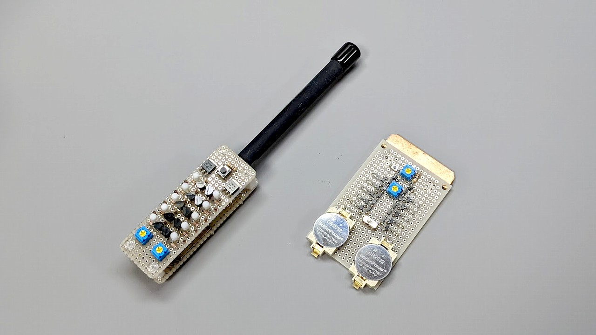
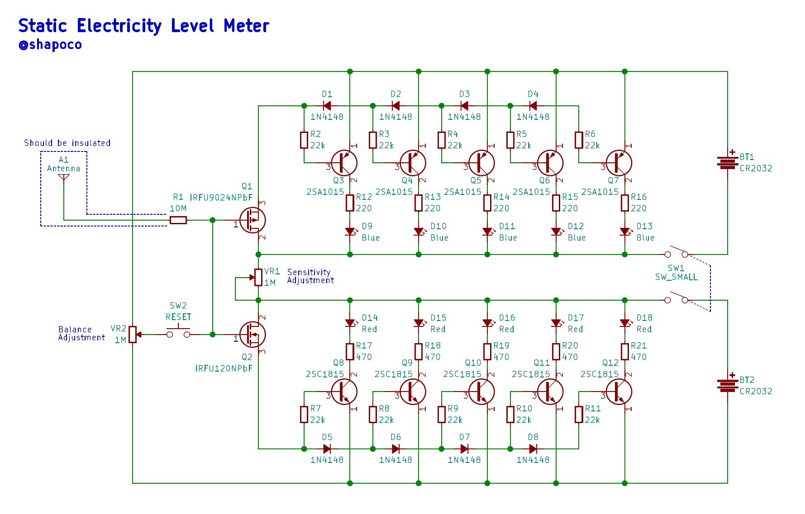
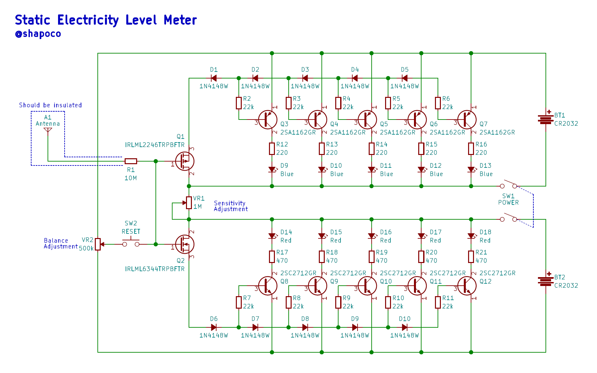

簡易静電気メーター
2023/02/23 |
更新履歴

- 2023/2/13 : SMD版回路図の VR1 と VR2 の定数が逆だったのを修正しました。
概要
静電気の極性とレベルを正負それぞれ5段階で表示できる簡易式の「静電気メーター」を作りました。
秋月にあるディスクリート部品だけで作ることができ、静電気の実験や教育に使うことができます。
動作の様子
ウィムズハースト起電機の近くに置いて動かした様子です。
回路
スルーホール版と表面実装版をそれぞれ作ってみました。動作原理はどちらも同じです。
- アンテナが帯電することで MOS-FET のゲートに電荷が流入し、ドレイン-ソース間が導通する。
- 直列接続されたダイオードの順方向電圧降下により、耐電のレベルに応じてトランジスタがオンになり、LED が光る。
重要なのは MOS-FET の選定で、ゲート漏れ電流が十分小さく、ゲートON電圧などの特性が近いペアを使用する必要があります。漏れ電流が大きいものを使用すると表示が不安定になったり、感度が弱くなったりします。
スルーホール版

SMD版

作例
SMD版はアンテナが裸の銅板になってますが、丸い形状の導体を使用し表面を絶縁した方がいいと思います。
使い方
調整
- リセットスイッチを押したまま以下の操作を行う
- 感度を最大にする
- 正負のバランスを合わせる
- 両方が消えるか消えないかくらいまで感度を下げる
- リセットスイッチを離す
測定
帯電した物体にアンテナを近づけます。
アンテナを物体に直接当てないでください。MOS-FET が壊れる可能性があります。